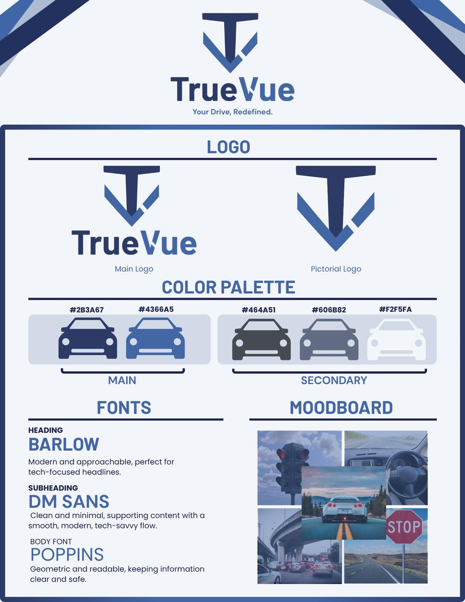

6-page PDF ↗︎01 / Brand identity
TrueVue Branding Packet
VP of Branding & Design · Virtual Enterprise
As Vice President of Branding & Design for a Virtual Enterprise firm, I designed a silver-ranked branding packet that established TrueVue’s visual identity. The packet carries that identity across business cards, sales materials, packaging, and promotions.
View full branding packet ↗︎PDF · opens in a new tab